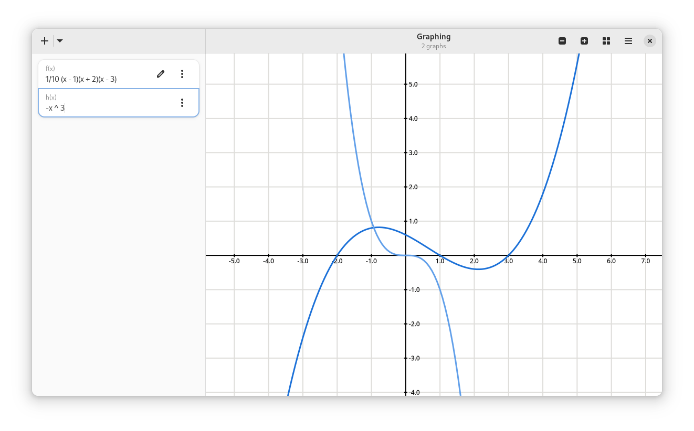
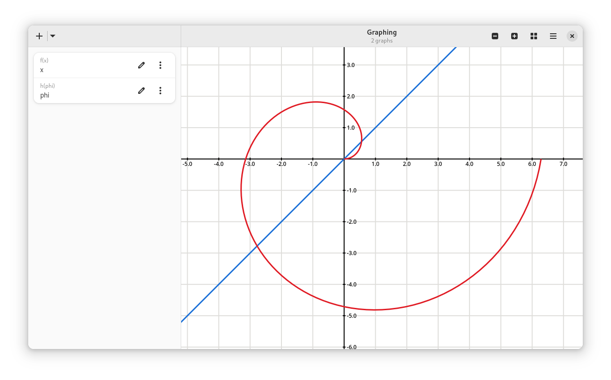
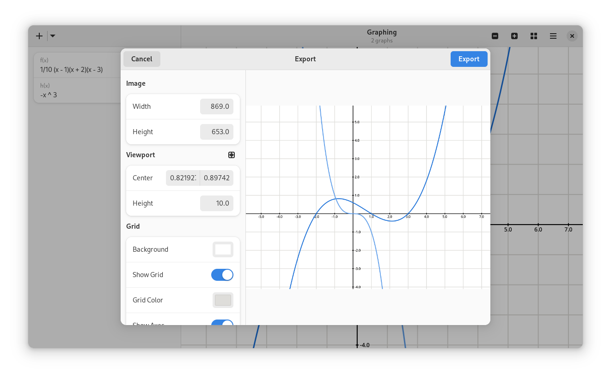

Graphing
Graphing is a simple graphing application for Linux.
Graphing supports the following functions:
- Functions:
sin,cos,tan,arcsin,arccos,arctan,floor,ceil,abs,max,min,sqrt,cbrt,ln,sum,prod - Operators:
+,-,*,/,^(exponentiation),%(modulo) - Constants:
pi,e
Installation
Graphing requires the development version of Owlkettle. Check out the installation instructions here.
$ git clone https://github.com/can-lehmann/Graphing.git
$ cd Graphing
$ nimble install owlkettle@#head
$ nimble install geometrymath
$ nim compile -r -d:adwaita12 -d:release main
Graphing is open-source. You can find the source code on GitHub.
Derivatives
Graphing can automatically compute derivatives of functions.
The ' operator returns the derivative of the given function.
Here we show the polynomial 1/5 (x - 1)(x + 2)(x - 3) and its derivative.
The derivative is computed using (x -> 1/5 (x - 1)(x + 2)(x - 3))'(x).
Polar Plots
A polar plot is a plot that uses a polar coordinate system. It takes an angle as the input and maps it to a radius.
Export
You can export graphs as images by selecting "Export" in the main menu. The export dialog allows you to customize the graph before exporting.
Expressions of functions can be copied as LaTeX code. Click the copy button at the bottom of the function properties to copy its LaTeX source to your clipboard.